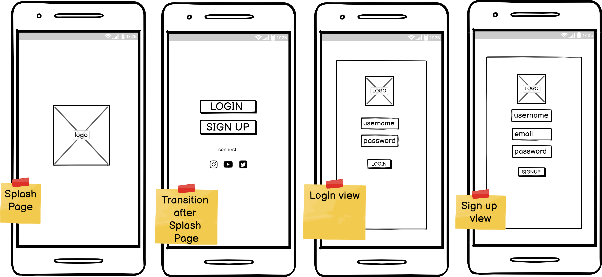
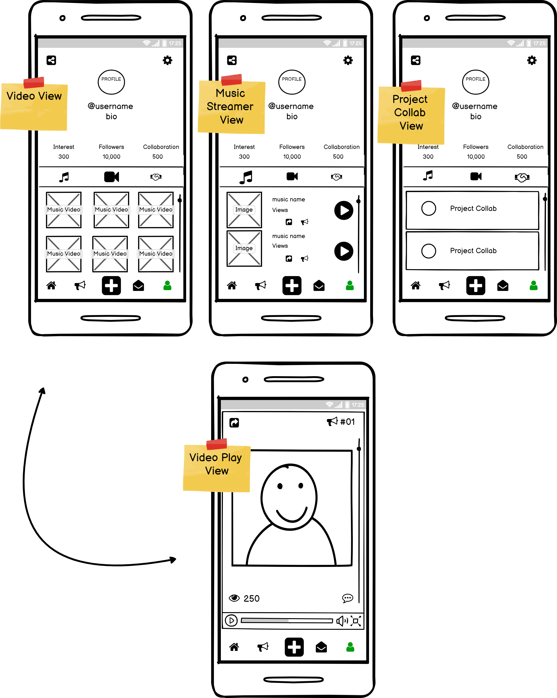
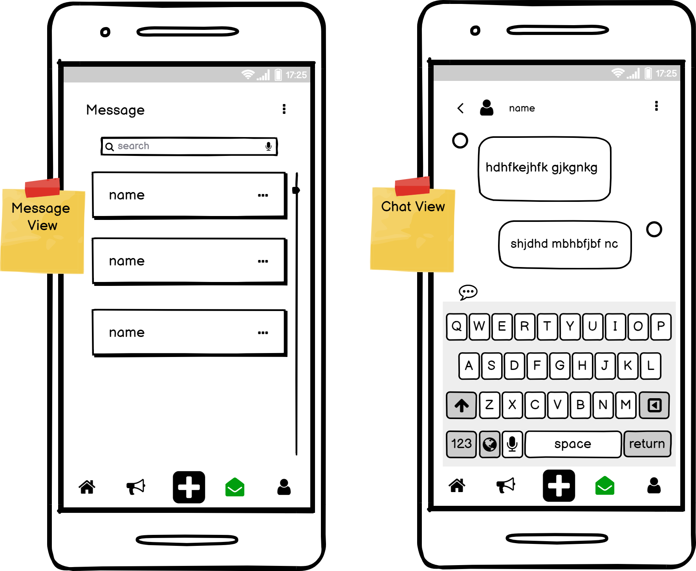
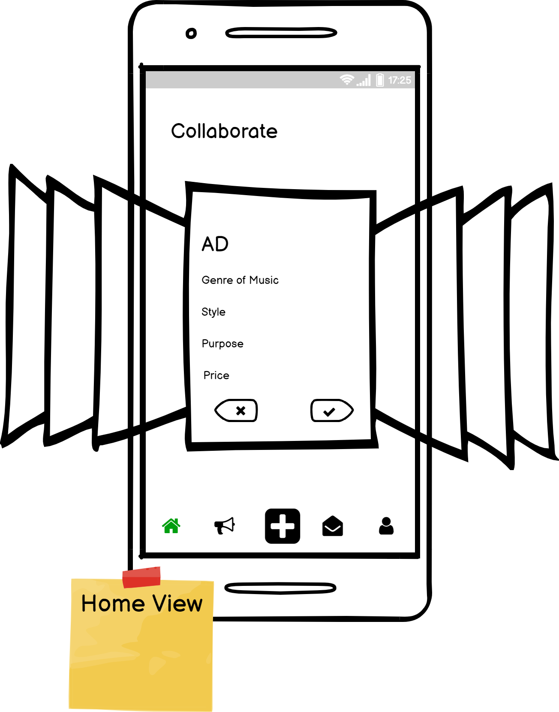
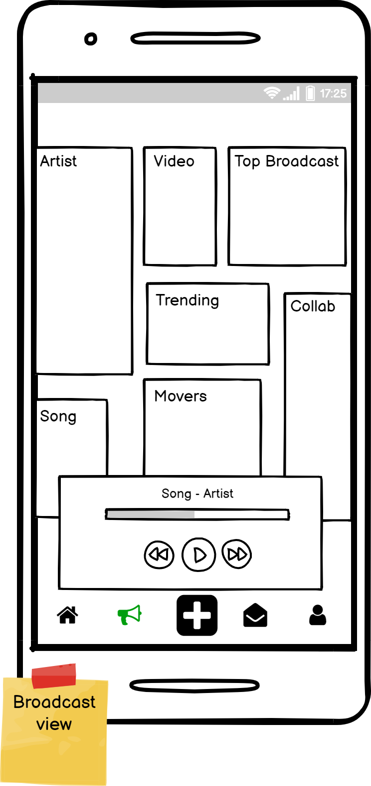

UI Design
UI Design stands for user interface, and it contains graphical layout of the application. This can consist of buttons,
images, sliders, text entry field, searches, and anything else the user would interact with. The aim is to help make the
experience aesthetically pleasing, the interaction as simple and for the user to be able meets their needs [1].
In the project I wanted to expand and develop my process when creating UI components and produce the overall design of
the application. At this point I have work on UX projects and cover some element of UI. But by breaking this down
further, I can examine element of UI design more closely, and reflect on the learnings I observe by differentiating
between the UX & UI. By being able to delve into UI, I can also begin to appreciate cohesion that is required by both UX
and UI.
APP CONCEPT
The problem addressed within my app, responds to difficulty for music creator who produce/record music are unable to
match with companies/organisation who would buy for there use.
KAPE provides a platform that gives music creator control over their music dissemination.
DESIGN PROCESS
As with UX design process, I have also added a process in for UI. This helps visual the steps that build up the UI, and factor in various considerations that contribute to developing the branding, design and overall message to the user.
USER PERSONA
User persona is a UX tool, however, can be useful in understanding the behaviour of our user. UI design essentially at the heart of providing an experience that works for its users. There are three personas’ reflective of different occupations and backgrounds – but all producer or creator of music. There are few things that are of interest, firstly how they share their music, what music influence they have and how much time they spend creating. Using this information, I can begin to identity the common thread in music sharing platform, in terms of their visual communication, secondly, what element will be important in the app and needs defining in the wireframes.

LOW-FIDELITY WIREFRAME
With the creation of the user persona, I now can better understand the user interest and behaviours. Using this information, I can create low fidelity wireframes which the specific feature address the users needs.
1. Landing Page (demonstates the users registering/login process)
2. Profile (shows the different views avaliable in the profile tab).
3. Message (inbox and chat view)
4. Broadcast (shows how user can improve their visibility and successful collaboration)
5. Matches (demonstrates how the ads are shown to a user).
VISUAL LANGUAGE
Visual language is communicating though visual elements. This can relate to the perception, comprehension and production
of visible sign that can be interpreted by our brains and turn into an emotion/reaction. Visual language requires
patterns that communicate a message, which gives consistency, connects with the user and established a strong brand
identity [2]. For this project, there are a few considerations on the colour palette, logo, brand, font, and tone of
information that we want user to be familiar and responsive to. As I mentioned earlier looking at the already existing
music streaming applications would help with this aspect.
To explore this, we need to use design inception worksheet, this will help brainstorm the considerations in one space.
The main areas of focus are space, shape, movement, colour, and mood. Before doing the design inception, I needed to
centre the purpose of the app, and the benefits to the user. During the process, I can keep the user in mind, whilst
working on these considerations. This will help inform the colour palette, typography, UI components and rules for over
consistency.
- a) Why users would want to use this?
- b) What type of mood that would be associate with this paritcular idea?
- c) How would you communicate this mood through the visual communication?
MOOD BOARD
Using the design inception, I have identified and group two moods that be further understood using the mood board process. The mood board will help articulate feeling associated with the concept and created in a visual view. This help identity which mood is more representative of the overall concept. The first mood is cool, creative, and minimal conveying inspiration and approachability relevant for building a profile. The second one is energetic, fast-pace and dynamic which suits the overall aims of enabling connection and collaboration.

STYLE TILE
The mood board help understand colour palette and moods that are representative of the concept. The style tile takes this one step further in relation to the visual elements and UI components based on the LF wireframe. This was a quick mock-up for both moods, to allow me compare contrast. The first style fits into creative mood and minimal style reflective of the music sharing platforms, and there is a good balance of contrast to keep this young and relevant to the user target audience.

STYLE GUIDE
Below is a style guide that has been used to create the High-fidelity wireframes. This can be used and updated when new additional and feature are added. This helps ensure consistency in pattern throughout the app, moreover, help ensure the same messaged and brand identity.

Reflections
I have enjoyed working through the UI process for KAPE, it helps me really focus in on the various elements involved in creating the right visual language for user, something you would normally underestimate. To go through this process, it great to see the results and how much each process has inform one another just like in UX Research. More importantly, I have been able to appreciate the importance of UI design being a main factor as to how someone interact and returns to the app, based on the visual/interactive experience more than UX research. Poor design would leave the UX research at waste – there is harmony between the two that needs to work in sync. Something I would look into greater detail is icons within apps – an area I could delve in deeper as its an element that feature quite prominently in applications.
REFERENCE
- ([1] https://medium.com/fresh-tilled-soil/what-is-user-interface-design-d7bf8c4561dc)
- ([2] https://rockcontent.com/blog/visual-language/#:~:text=Visual%20language%20can%20be%20defined,emotions%2C%20actions%2C%20and%20thoughts.)